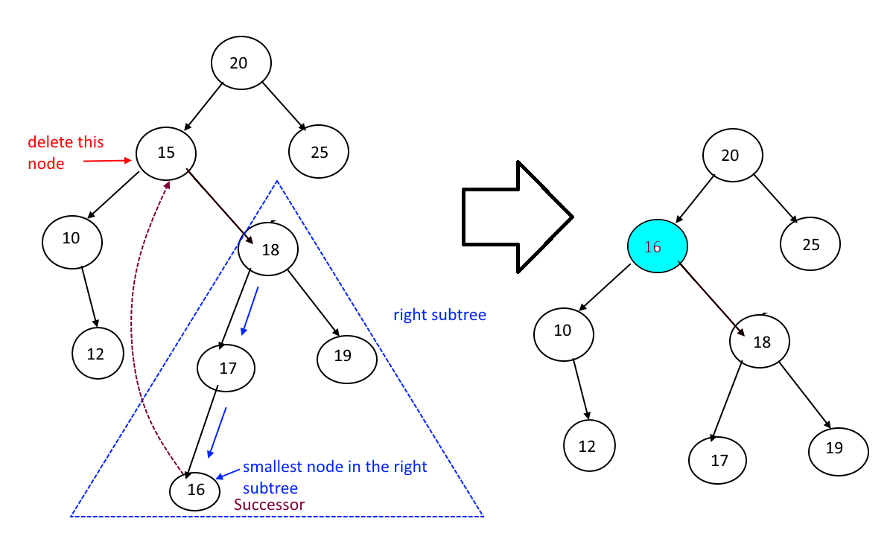

class TreeNode:
def __init__(self,data,left=None,right=None):
self.data=data
self.left=left
self.right=right
Goals
TreeNodeclassinsert_node()insert_node_list()- Basic Binary Tree
search_node()traverse()delete_node()- Testing
1. Create TreeNode (ETA: 1 minute)
2. insert_node (ETA: 10 minutes)
def insert_node(root_node: TreeNode, target: int):
# search
current_node = root_node
if target == current_node.data:
print(f"t\t{target} already in tree! No further action. ")
return
if target < current_node.data: # go left
if current_node.left:
print(f"\t{current_node.data} has a left-child{current_node.left.data}: going left")
current_node = current_node.left
return insert_node(current_node, target)
else: # insert
current_node.left = TreeNode(target)
print(f"\t{current_node.left.data} inserted left of c{current_node.data}")
return current_node.left.data
else:
if current_node.right:
print(f"\t{current_node.data} has a right-child{current_node.right.data}: going left")
current_node = current_node.right
return insert_node(current_node, target)
else:
current_node.right = TreeNode(target)
print(f"\t{current_node.right.data} inserted right of c{current_node.data}")
return current_node.right.data# 50
# 25 75
# 10 33 56 89
# 4 11 30 40 52 61 82 95
root = TreeNode(50)
insert_node(root, 25)
insert_node(root, 75)
insert_node(root, 10)
insert_node(root, 33)
insert_node(root, 4)
insert_node(root, 11) 25 inserted left of c50
75 inserted right of c50
50 has a left-child25: going left
10 inserted left of c25
50 has a left-child25: going left
33 inserted right of c25
50 has a left-child25: going left
25 has a left-child10: going left
4 inserted left of c10
50 has a left-child25: going left
25 has a left-child10: going left
11 inserted right of c10113. insert_node_list (ETA: 8 minutes)
# def insert_node_list(root_node: TreeNode, target: int):
# 50
# 25 75
# 10 33 56 89
# 4 11 30 40 52 61 82 95
def insert_node_list(root_node: TreeNode, node_list: list):
for tree_node in node_list:
print(f"Attempting to insert: [{tree_node}]")
insert_node(root_node, tree_node)
print()
4. Create Binary Search Tree (ETA: 1 Minute)
node_list = [50,25,75,10,33,56,89,4,11,30,40,52,61,82,95]
root = TreeNode(50)
insert_node_list(root,node_list)Attempting to insert: [50]
t 50 already in tree! No further action.
Attempting to insert: [25]
25 inserted left of c50
Attempting to insert: [75]
75 inserted right of c50
Attempting to insert: [10]
50 has a left-child25: going left
10 inserted left of c25
Attempting to insert: [33]
50 has a left-child25: going left
33 inserted right of c25
Attempting to insert: [56]
50 has a right-child75: going left
56 inserted left of c75
Attempting to insert: [89]
50 has a right-child75: going left
89 inserted right of c75
Attempting to insert: [4]
50 has a left-child25: going left
25 has a left-child10: going left
4 inserted left of c10
Attempting to insert: [11]
50 has a left-child25: going left
25 has a left-child10: going left
11 inserted right of c10
Attempting to insert: [30]
50 has a left-child25: going left
25 has a right-child33: going left
30 inserted left of c33
Attempting to insert: [40]
50 has a left-child25: going left
25 has a right-child33: going left
40 inserted right of c33
Attempting to insert: [52]
50 has a right-child75: going left
75 has a left-child56: going left
52 inserted left of c56
Attempting to insert: [61]
50 has a right-child75: going left
75 has a left-child56: going left
61 inserted right of c56
Attempting to insert: [82]
50 has a right-child75: going left
75 has a right-child89: going left
82 inserted left of c89
Attempting to insert: [95]
50 has a right-child75: going left
75 has a right-child89: going left
95 inserted right of c89
5. search_node (ETA: 6 minutes)
def search_node(root_node: TreeNode, target: int):
current_node = root_node
if target == current_node.data:
print(f"\t{target}c{current_node.data} found!")
return current_node.data
if target < current_node.data: # go left
if current_node.left:
print(f"\t{target}<c{current_node.data}: going left")
current_node = current_node.left
return search_node(current_node, target)
else:
print(f"t{target}<{current_node.data} not found!")
else:
if current_node.right:
print(f"\t{target}>c{current_node.data}: going right")
current_node = current_node.right
return search_node(current_node, target)
else:
print(f"t{target}>c{current_node.data} not found!")
# 50
# 25 75
# 10 33 56 89
# 4 11 30 40 52 61 82 95
search_node(root,50)
print()
search_node(root,4)
print()
search_node(root,82)
print() 50c50 found!
4<c50: going left
4<c25: going left
4<c10: going left
4c4 found!
82>c50: going right
82>c75: going right
82<c89: going left
82c82 found!
6. traverse (ETA: 3 minutes)
def traverse(root_node: TreeNode):
if not root_node:
return
traverse(root_node.left)
print(root_node.data)
traverse(root_node.right)
# 50
# 25 75
# 10 33 56 89
# 4 11 30 40 52 61 82 95
traverse(root) # expected: 4,10,11,25,30,33,40,50,52,56,61,75,82,89,954
10
11
25
30
33
40
50
52
56
61
75
82
89
957. delete_node (ETA: 120 minutes)
searchnode (ETA: 9 minutes)deletenode [0or1child]:rootnode (ETA: 37 minutes)non-rootnode (ETA: 23 minutes):- one-left-child
- one-right-child
deletenode [2childs] (ETA: 50 minutes)
def find_s_node(target_node: TreeNode):
s_node = target_node.right
if not s_node.left:
target_node.right = s_node.right
target_node.data = s_node.data
return
while s_node.left:
p_node = s_node
s_node = s_node.left
if s_node.right:
p_node.left = s_node.right
else:
p_node.left = None
target_node.data = s_node.data
return s_nodedef delete_node(root_node: TreeNode, target: int):
current_node = root_node
parent_node = None
target_node = None
# find_node
while current_node:
if target == current_node.data:
target_node = current_node
print(f"t[{target_node.data}]==c[{current_node.data}] found!")
break
if target < current_node.data: #go left
print(f"t[{target}]<-c[{current_node.data}]: go left...")
parent_node = current_node
current_node = current_node.left
else:
print(f"t[{target}]->c[{current_node.data}]: go right...")
parent_node = current_node
current_node = current_node.right
if not target_node:
print(f"t[{target}]!=c[{parent_node.data}] NOT found! no more kids!")
# find_successor_node
if target_node.left and target_node.right: # 2 kids
find_s_node(target_node)
else: # 0 or 1 kids
# root_node
targets_child_node = (target_node.left or target_node.right)
if not parent_node: # AND has 1 or 0 kids
print(f"t[{target_node.data}] to be replaced by its c[{targets_child_node.data}]")
target_node.data = targets_child_node.data # either None or Some Int
target_node.left = targets_child_node.left
target_node.right = targets_child_node.right
else: # not root with 0 or 1 child
# PARENT.LEFT
if parent_node.left == current_node:
parent_node.left = targets_child_node
return
# PARENT.RIGHT
if parent_node.right == current_node:
parent_node.right = targets_child_node
return
pass8. Testing (Scenarios: 12)
These are some scenarios I came up with
8.1 Scenario 1
# target has 1 left child
# target child has two children
root =TreeNode(50)
insert_node_list(root, [25,10,33])
# [50] <-------- root_node <----------------------- target_node
# 25 [] <-------- target.left <--------------------- None or Integer
# 10 33 [] <-------- target_child.left or right <------ Any
delete_node(root,50)
# [25] <-------- target.left replaces target
# 10 33 <--------
print(f"{traverse(root)}, expected: 10,25,33")
print()
print(f"{root.data}, expected: 25")
print(f"{root.left.data}, expected: 10")
print(f"{root.right.data}, expected: 33")Attempting to insert: [25]
25 inserted left of c50
Attempting to insert: [10]
50 has a left-child25: going left
10 inserted left of c25
Attempting to insert: [33]
50 has a left-child25: going left
33 inserted right of c25
t[50]==c[50] found!
t[50] to be replaced by its c[25]
10
25
33
None, expected: 10,25,33
25, expected: 25
10, expected: 10
33, expected: 338.2 Scenario 2
# target has 1 right child
# target child has two children
root =TreeNode(50)
insert_node_list(root, [75,74,76])
# [50] <-------- root_node <----------------------- target_node
# [75] <-------- target.right <--------------------- None or Integer
# 74 76 <-------- target_child.left or right <------ Any
delete_node(root,50)
# [75] <-------- target.right replaces target
# 74 76 <--------
print(f"{traverse(root)}, expected: 74,75,76")
print()
print(f"{root.data}, expected: 75")
print(f"{root.left.data}, expected: 74")
print(f"{root.right.data}, expected: 76")Attempting to insert: [75]
75 inserted right of c50
Attempting to insert: [74]
50 has a right-child75: going left
74 inserted left of c75
Attempting to insert: [76]
50 has a right-child75: going left
76 inserted right of c75
t[50]==c[50] found!
t[50] to be replaced by its c[75]
74
75
76
None, expected: 74,75,76
75, expected: 75
74, expected: 74
76, expected: 768.3 Scenario 3
# target has 1 right child
# target child has 1 right children
root =TreeNode(50)
insert_node_list(root, [75,74])
# [50] <-------- root_node <----------------------- target_node
# [75] <-------- target.right <--------------------- None or Integer
# 74 <-------- target_child.left <------ Any
delete_node(root,50)
# [75] <-------- target.right replaces target
# 74 <--------
print(f"{traverse(root)}, expected: 74,75")
print()
print(f"{root.data}, expected: 75")
print(f"{root.left.data}, expected: 74")Attempting to insert: [75]
75 inserted right of c50
Attempting to insert: [74]
50 has a right-child75: going left
74 inserted left of c75
t[50]==c[50] found!
t[50] to be replaced by its c[75]
74
75
None, expected: 74,75
75, expected: 75
74, expected: 748.4 Scenario 4
# target has 1 right child
# target child has 1 left children
root =TreeNode(50)
insert_node_list(root, [25,10])
# [50] <-------- root_node <----------------------- target_node
# [25] <-------- target.left <--------------------- None or Integer
# [10] <-------- target_child.left <------ Any
delete_node(root,50)
# [25] <-------- target.left replaces target
# 10 <--------
print(f"{traverse(root)}, expected: 10,25")
print()
print(f"{root.data}, expected: 25")
print(f"{root.left.data}, expected: 10")Attempting to insert: [25]
25 inserted left of c50
Attempting to insert: [10]
50 has a left-child25: going left
10 inserted left of c25
t[50]==c[50] found!
t[50] to be replaced by its c[25]
10
25
None, expected: 10,25
25, expected: 25
10, expected: 108.5 Scenario 5
# target has 1 left child
# target_child has 0 children
root =TreeNode(50)
insert_node_list(root, [25,10])
# 50 <-------- parent_node
# [25] <-------- target or parent.left
# 10 <-------- targets_child (or target.left) replaces target via parent.left -> target_child <------ 1
delete_node(root,25)
# 50 <-------- parent_node <--------------
# [10] <-------- target_child
print(f"{traverse(root)}, expected: 10,50")
print()
print(f"{root.data}, expected: 50")
print(f"{root.left.data}, expected: 10")Attempting to insert: [25]
25 inserted left of c50
Attempting to insert: [10]
50 has a left-child25: going left
10 inserted left of c25
t[25]<-c[50]: go left...
t[25]==c[25] found!
10
50
None, expected: 10,50
50, expected: 50
10, expected: 108.6 Scenario 6
# target has 1 left child
# target_child has 2 children
root =TreeNode(50)
insert_node_list(root, [25,10,4,15])
# 50 <-------- parent_node
# [25] <-------- target or parent.left
# 10 <-------- targets_child (or target.left) replaces target via parent.left -> target_child <------ 1
# 4 15
delete_node(root,25)
# 50 <-------- parent_node <--------------
# [10] <-------- target_child
# 4 15
print(f"{traverse(root)}, expected: 4,10,15,50")
print()
print(f"{root.data}, expected: 50")
print(f"{root.left.data}, expected: 10")
print(f"{root.left.left.data}, expected: 4")
print(f"{root.left.right.data}, expected: 15")Attempting to insert: [25]
25 inserted left of c50
Attempting to insert: [10]
50 has a left-child25: going left
10 inserted left of c25
Attempting to insert: [4]
50 has a left-child25: going left
25 has a left-child10: going left
4 inserted left of c10
Attempting to insert: [15]
50 has a left-child25: going left
25 has a left-child10: going left
15 inserted right of c10
t[25]<-c[50]: go left...
t[25]==c[25] found!
4
10
15
50
None, expected: 4,10,15,50
50, expected: 50
10, expected: 10
4, expected: 4
15, expected: 158.7 Scenario 7
# target has 1 right child
# target_child has 2 children
root =TreeNode(50)
insert_node_list(root, [55,52,51,53])
# 50 <-------- parent_node
# [55] <-------- target or parent.left
# 52 <-------- targets_child (or target.left) replaces target via parent.left -> target_child <------ 1
# 51 53
delete_node(root,55)
# 50 <-------- parent_node
# [52] <-------- target_child becomes target
# 51 53
print(f"{traverse(root)}, expected: 50,51,52,53")
print()
print(f"{root.data}, expected: 50")
print(f"{root.right.data}, expected: 52")
print(f"{root.right.left.data}, expected: 51")
print(f"{root.right.right.data}, expected: 53")Attempting to insert: [55]
55 inserted right of c50
Attempting to insert: [52]
50 has a right-child55: going left
52 inserted left of c55
Attempting to insert: [51]
50 has a right-child55: going left
55 has a left-child52: going left
51 inserted left of c52
Attempting to insert: [53]
50 has a right-child55: going left
55 has a left-child52: going left
53 inserted right of c52
t[55]->c[50]: go right...
t[55]==c[55] found!
50
51
52
53
None, expected: 50,51,52,53
50, expected: 50
52, expected: 52
51, expected: 51
53, expected: 538.8 Scenario 8
root =TreeNode(50)
insert_node_list(root, [25,75])
# [50]x
# 25 [75]s
delete_node(root,50)
# [50]x
# 25
print(f"{traverse(root)}, expected: 25, 75")
print()
print(f"{root.data}, expected: 75")
print(f"{root.left.data}, expected: 25")Attempting to insert: [25]
25 inserted left of c50
Attempting to insert: [75]
75 inserted right of c50
t[50]==c[50] found!
25
75
None, expected: 25, 75
75, expected: 75
25, expected: 258.9 Scenario 9
root =TreeNode(50)
insert_node_list(root, [25,75,89])
# [50]x
# 25 [75]s
# [89]c
delete_node(root,50)
# [75]x
# 25 [89]s
print(f"{traverse(root)}, expected: 25, 75, 89")
print()
print(f"{root.data}, expected: 75")
print(f"{root.left.data}, expected: 25")
print(f"{root.right.data}, expected: 89")Attempting to insert: [25]
25 inserted left of c50
Attempting to insert: [75]
75 inserted right of c50
Attempting to insert: [89]
50 has a right-child75: going left
89 inserted right of c75
t[50]==c[50] found!
25
75
89
None, expected: 25, 75, 89
75, expected: 75
25, expected: 25
89, expected: 898.10 Scenario 10
root =TreeNode(50)
insert_node_list(root, [25,75,70,89])
# [50]x
# 25 [75]s
# [70]c [89]c
delete_node(root,50)
# [70]x
# 25 [75]s
# [89]c
print()
print(f"{traverse(root)}, expected: 25, 70, 75, 89")
print()
print(f"{root.data}, expected: 70")
print(f"{root.left.data}, expected: 25")
print(f"{root.right.data}, expected: 75")
print(f"{root.right.right.data}, expected: 89")Attempting to insert: [25]
25 inserted left of c50
Attempting to insert: [75]
75 inserted right of c50
Attempting to insert: [70]
50 has a right-child75: going left
70 inserted left of c75
Attempting to insert: [89]
50 has a right-child75: going left
89 inserted right of c75
t[50]==c[50] found!
25
70
75
89
None, expected: 25, 70, 75, 89
70, expected: 70
25, expected: 25
75, expected: 75
89, expected: 898.11 Scenario 11
root =TreeNode(50)
insert_node_list(root, [25,75,79,89,60])
# [50]x
# 25 [75]s
# 70c 89c
# 60
delete_node(root,50)
# [60]
# 25 [75]s
# 70 [89]c
print(f"{traverse(root)}, expected: 25, 60, 70, 75, 89")Attempting to insert: [25]
25 inserted left of c50
Attempting to insert: [75]
75 inserted right of c50
Attempting to insert: [79]
50 has a right-child75: going left
79 inserted right of c75
Attempting to insert: [89]
50 has a right-child75: going left
75 has a right-child79: going left
89 inserted right of c79
Attempting to insert: [60]
50 has a right-child75: going left
60 inserted left of c75
t[50]==c[50] found!
25
60
75
79
89
None, expected: 25, 60, 70, 75, 898.12 Scenario 12
root =TreeNode(50)
insert_node_list(root, [25,75,79,89,60,65])
# [50]x
# 25 [75]s
# 70c 89c
# 60
# 65
delete_node(root,50)
# [60]
# 25 [75]s
# 70 [89]c
# 65
print(f"{traverse(root)}, expected: 25, 60, 65, 70, 75, 89")Attempting to insert: [25]
25 inserted left of c50
Attempting to insert: [75]
75 inserted right of c50
Attempting to insert: [79]
50 has a right-child75: going left
79 inserted right of c75
Attempting to insert: [89]
50 has a right-child75: going left
75 has a right-child79: going left
89 inserted right of c79
Attempting to insert: [60]
50 has a right-child75: going left
60 inserted left of c75
Attempting to insert: [65]
50 has a right-child75: going left
75 has a left-child60: going left
65 inserted right of c60
t[50]==c[50] found!
25
60
65
75
79
89
None, expected: 25, 60, 65, 70, 75, 899. Final Words
Still getting my head around delete_node but I will push on.
The others operations I’ve got the grasp of reflected in the amount of time to code them up.